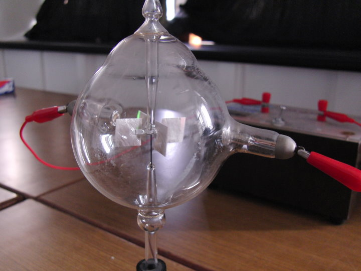
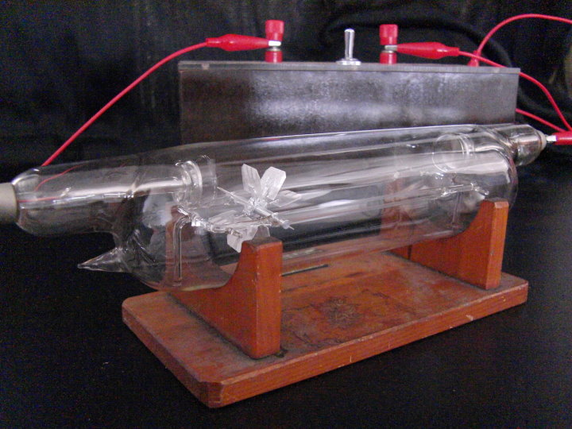
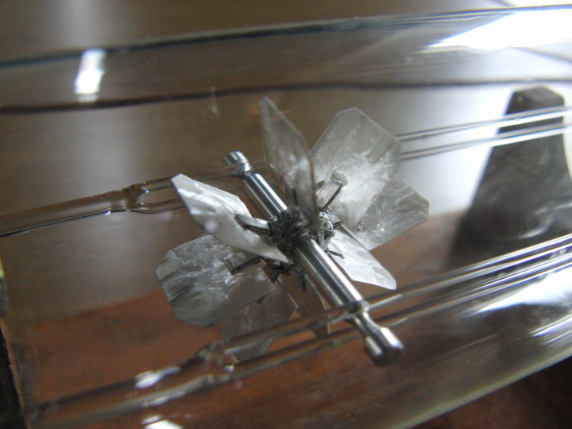
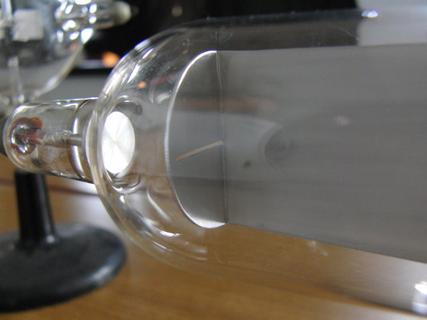
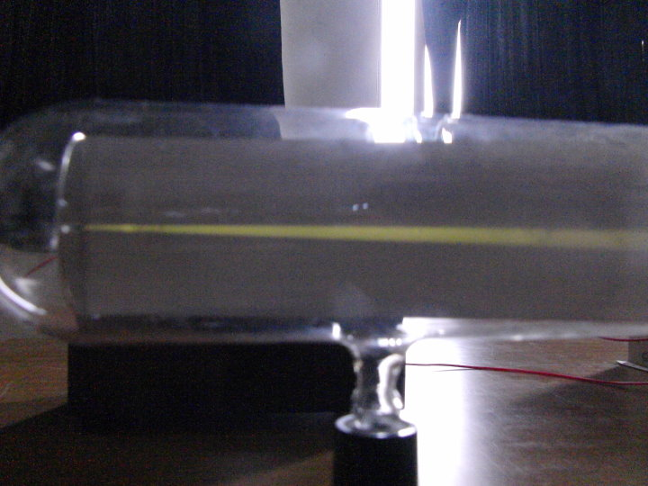
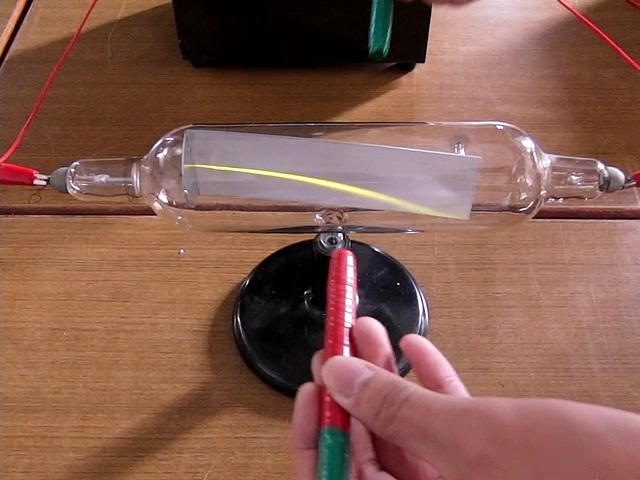
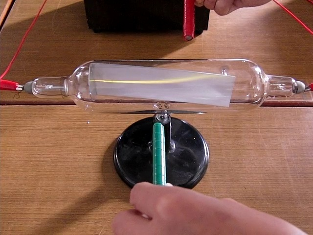
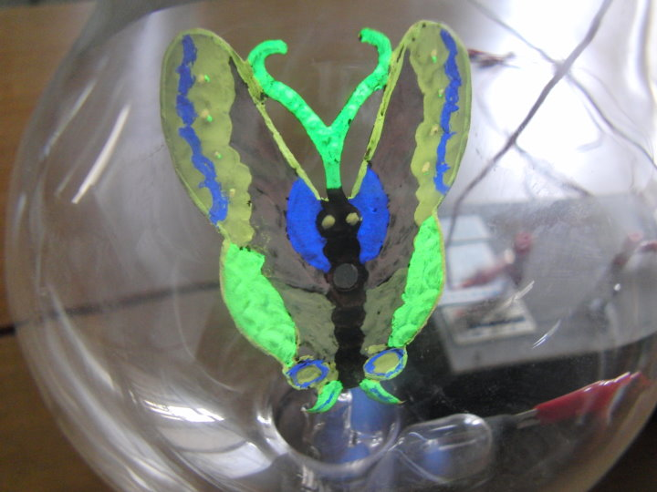
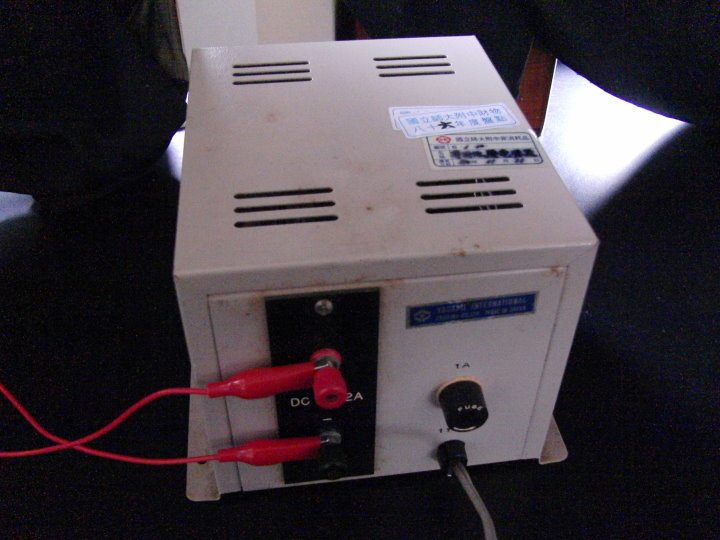
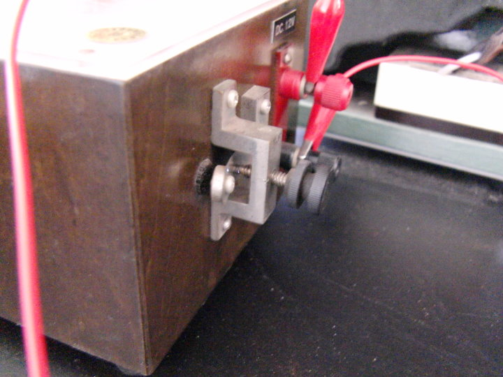

陰極射線管
↑在實驗室裡找到一些寶物 ─ 陰極射線管。

↑介紹一下器材：A低壓直流電源供應器，B高壓電源供應器，
CDE不同內容物的陰極射線管，F磁鐵。

↑直立風車，陰極射線打在葉片上，會使葉片轉動。

↑平躺風車，陰極射線打在葉片上，會使葉片轉動，還會向前滾。

↑平躺風車特寫。想一想，葉片會轉動代表甚麼意思呢？(1)

↑另一種設計，左邊圓形是陰極，右邊有開一道狹縫的是陽極。

↑陰極射線從狹縫射出，打在塗有螢光劑的板子上，留下一條直直的軌跡。

↑磁鐵靠過來，前紅後綠，使陰極射線向下彎。

↑磁鐵反過來，陰極射線向上彎。由此可以判斷，磁棒紅色或綠色是N極呢？(2)

↑又在櫃子裡找到一個，裡面有一隻蝴蝶造型的電極。

↑蝴蝶電極塗有螢光劑，在射線照射下發出 詭異
美麗的光芒。請問蝴蝶是陰極或陽極呢？(3)

↑辛苦的電源供應器A，這台是把110V AC 變為 12V DC。

↑辛苦的電源供應器B，這台是把 12V DC 變為 提供陰極射線管的 直流高壓電。

↑電源供應器B，工作時旁邊的金屬接點會閃出火花。
本頁照片、影片由師大附中1268班 郭彥佐、張脩耀 進行操作與拍攝。
問題參考答案：(1)葉片會轉動，表示陰極射線有質量(動量)。(2)紅N綠S。(3)蝴蝶是陽極(+)。